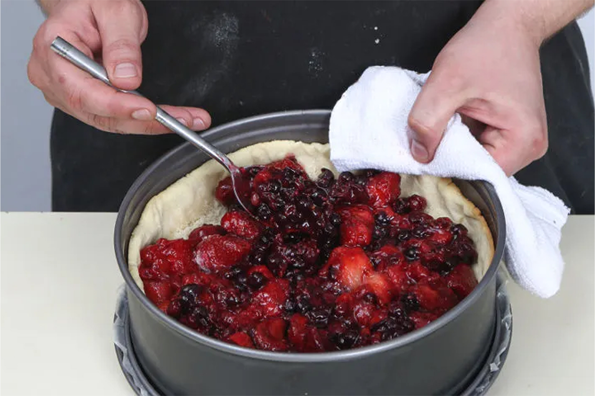

Ингриденты:
Мука, 350г.
Клубника, 500 г.
Черная смородина, 500 г.
Сливочное масло, 230 г.
Сахарная пудра, 150 г.
Молотый миндаль, 3 ст. л.
Яйцо, 1 шт.
Так хочется, чтобы в летних десертах теста было поменьше, а ягод — побольше! Наш открытый песочный пирог с ягодами как раз такой — с сочной, богатой начинкой и оригинальным декором. Теста в пироге минимум, а из его остатков можно вырезать небольшие квадраты или другие украшения, и пусть тестяные фигурки лежат на ягодах и пропитываются их соком. Для начинки мы использовали черную смородину и клубнику. Но не менее прекрасный дуэт получится из клубники и крыжовника или вишни и сливы — выбирайте то сочетание ягод, которое вам по душе!
Шаг 1
Подготовка ингридиентов
Охлажденное сливочное масло на режьте небольшими кубиками. Разделите желток и белок. Добавьте к маслу желток, 50 г сахарной пудры, семена ванили и просеянную муку. Порубите смесь ножом или в комбайне в мелкую крошку.
Шаг 2
Приготовление теста
Переложите смесь на стол, подпыленный мукой, и быстро вымесите до однородности. Разделите на 3 равные части, две соедините. Оберните большую и малую части теста в пленку и уберите в холодильник на 30 мин.
Шаг 3
Переходим к ягодам
Взбейте яйца с сахаром, добавьте лимонную цедру и сок. Оставьте на 10 мин.
Шаг 4
Раскатываем и выпекаем
Раскатайте большую часть теста в пласт толщиной не более 5 мм. Разъемную жаропрочную форму диаметром 22–24 см застелите бумагой для выпечки. Переложите пласт теста, сформируйте бортики. Сделайте несколько проколов вилкой по всему дну. Проложите круг, вырезанный из бумаги для выпечки, засыпьте сухой фасолью. Выпекайте в духовке при 180 °С 10–15 мин., до светло-золотистого цвета.
Шаг 5
Еще немного выпекаем
Удалите фасоль и бумагу. Запекайте еще 7–10 мин. Оставшийся кусок теста раскатайте, разрежьте на квадраты со стороной 4–5 см.
Пир!
Последние штрихи
Посыпьте тесто в форме миндалем. Выложите начинку и сбрызните 2–3 ст. л. сиропа. Выложите сырое тесто (квадраты) на начинку в хаотичном порядке. Силиконовой кисточкой смажьте куски слегка взбитым белком и присыпьте смесью корицы и оставшейся сахарной пудры. Края пирога (выпеченную основу) укройте фольгой и выпекайте пирог 20–25 мин. до полной готовности. Достаньте форму из духовки, немного остудите и подавайте с пломбиром, политым остатками сиропа.


128
Поделиться статьей